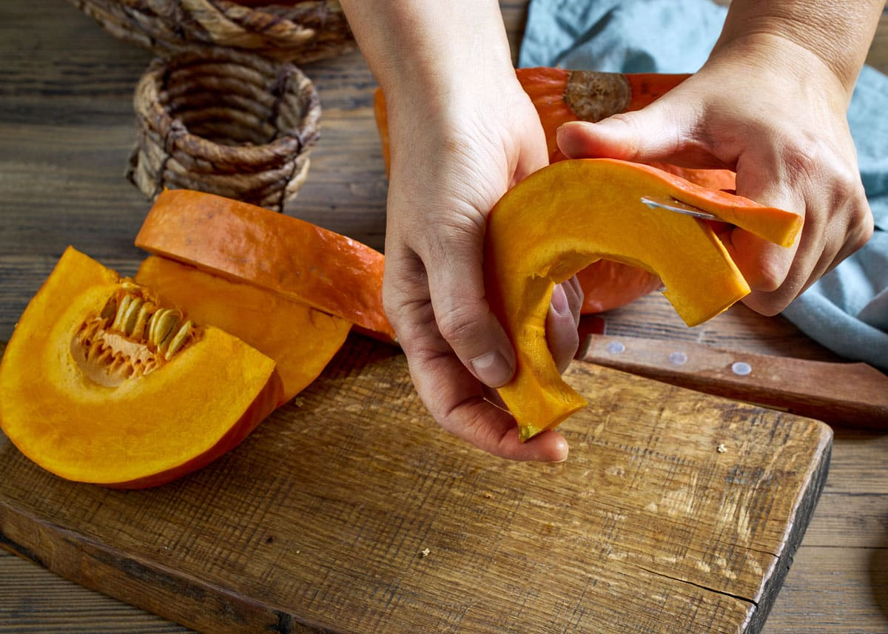
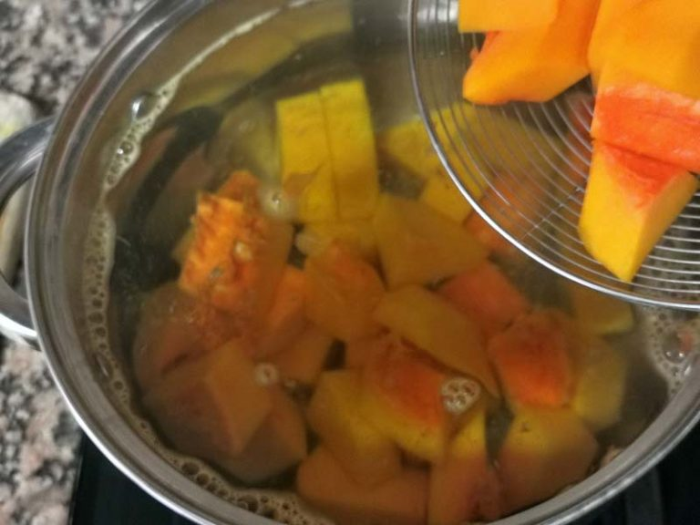
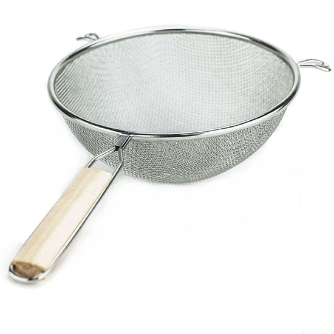
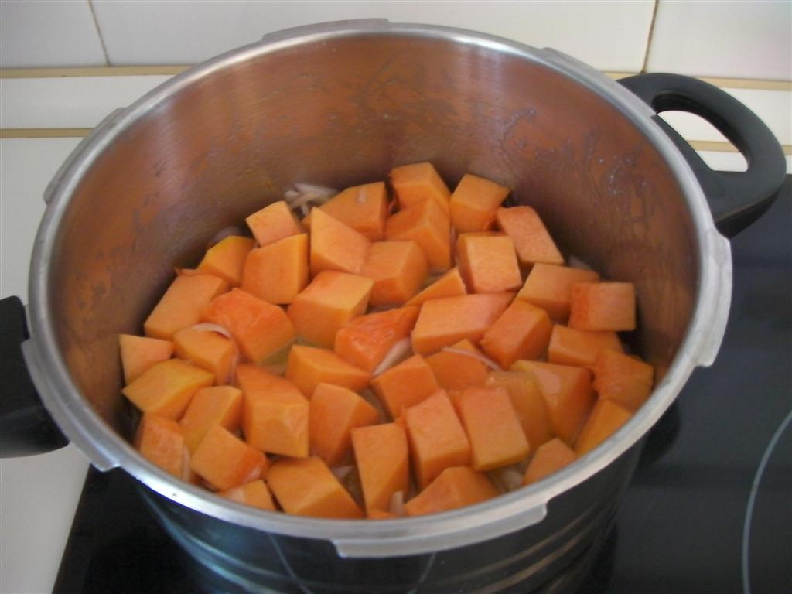
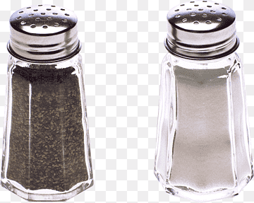
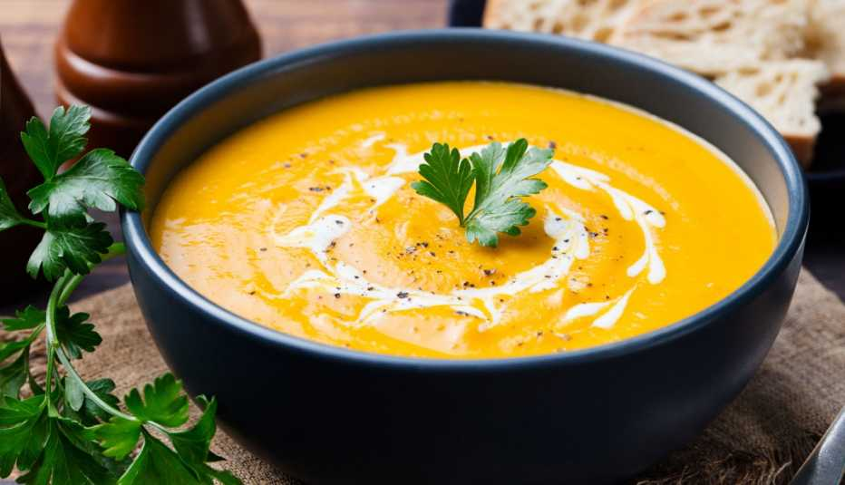

Regresar al menu
Sopa de Calabaza
Indice de Contenidos
Ingredientes
Los ingredientes que necesitaremos seran:
- Calabaza (tipo anco o cabutia – 1/2 mediana)
- 1 papa (opcional, para más cremosidad)
- 1 cebolla (opcional, da más sabor)
- Sal y pimienta
- Agua o caldo
- Un chorrito de crema, leche o queso crema (opcional)
Paso a Paso
- Pelar y cortar la calabaza (y la papa, si usás) en cubos. Cortar la cebolla.

- Hervir todo junto en agua o caldo, hasta que esté bien blando (15-20 min).

- Colar un poco el líquido (reservalo) y licuar o pisar hasta que quede cremoso.

- Volver a la olla, ajustar con el líquido reservado hasta lograr la textura deseada.

- Salpimentar y agregar crema/leche/queso crema si querés que quede más suave. Calentar y listo.

resultado

Regresar al menu principal